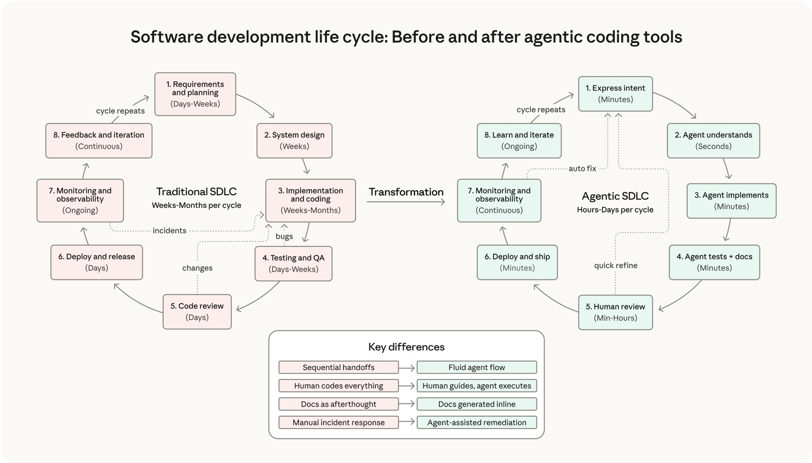
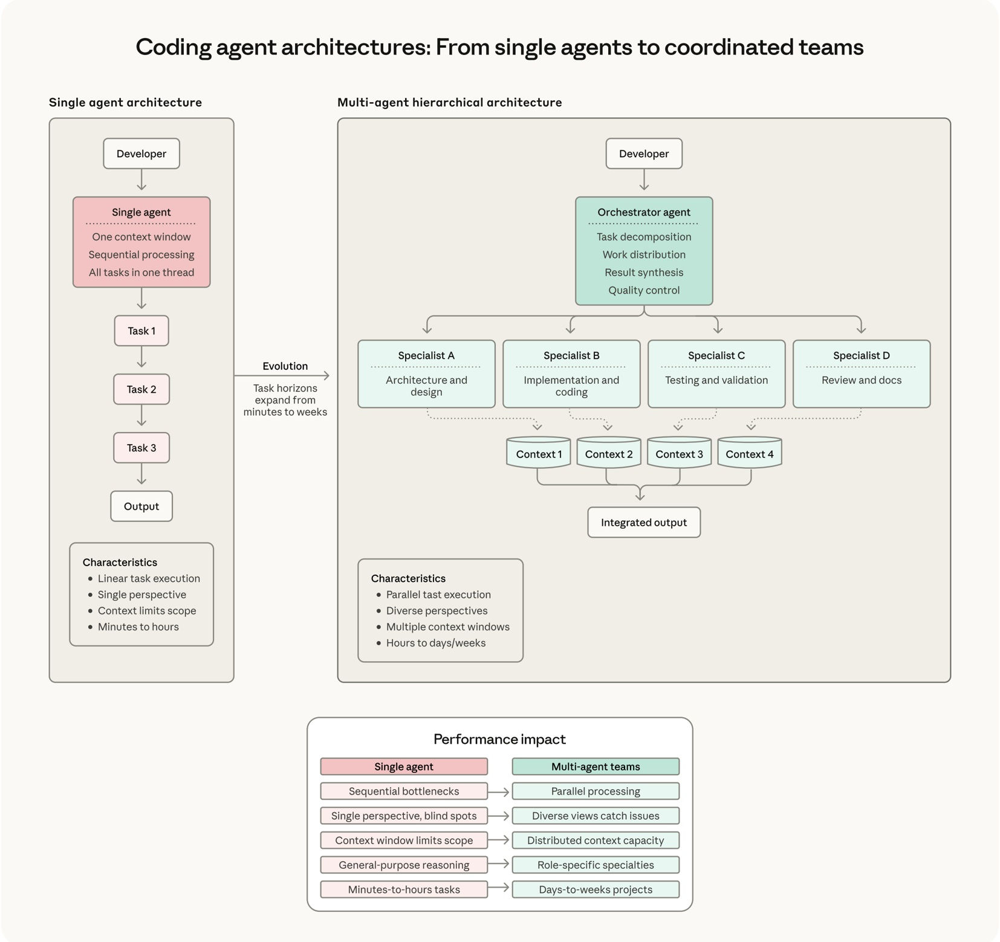

2026 代理程式編碼趨勢報告
程式碼代理程式如何重塑軟體開發
logo
總覽
| 前言：從協助到協作 | 3 |
|---|---|
| 基礎趨勢：板塊的移動 | 4 |
| 趨勢 1：軟體開發生命週期發生劇烈變化 | 5 |
| 功能趨勢：代理程式的能力 | 7 |
| 趨勢 2：單一代理程式演變成協調團隊 | 8 |
| 趨勢 3：長期執行的代理程式建構完整系統 | 9 |
| 趨勢 4：透過智慧協作擴展人類監督 | 10 |
| 趨勢 5：代理程式編碼擴展到新的應用介面和使用者 | 11 |
| 影響趨勢：代理程式在 2026 可能帶來的改變 | 12 |
| 趨勢 6：生產力提升重塑軟體開發經濟 | 13 |
| 趨勢 7：非技術性用例擴展至整個組織 | 14 |
| 趨勢 8：雙重用途風險需要以資安為優先的架構 | 15 |
| 來年的優先事項 | 16 |
前言
從協助到協作
在 2025 年，程式碼代理程式從實驗性工具轉變為向真實客戶交付實際功能的生產系統。工程團隊發現，AI 現在可以處理整個實施流程：撰寫測試、調試錯誤、生成文件，以及導覽日益複雜的程式碼庫。
在 2026 年，我們預測這些收益將遠遠超出對現有工具或模型的增量改進。我們預期單一代理程式將演變成協調的代理程式團隊。過去需要數小時或數天的任務，現在可能只需極少的人類干預即可完成。而幾年前還親手撰寫每一行程式碼的工程師，將越來越多地協調長期運行的代理程式系統，由代理程式處理實施細節，讓他們能專注於架構和策略。
然而，透過研究開發人員實際如何與 AI 協作，出現了一個關鍵的細微差別：這種轉變本質上是協作性的。我們社會影響團隊的研究顯示，雖然開發人員在他們約 60% 的工作中使用了 AI，但他們報告說「完全委派」的任務僅佔 0-20%。AI 作為一個持續的協作者，但要有效地使用它，需要細心的設置和提示（prompting）、主動的監督、驗證以及人類判斷，尤其是在涉及高風險的工作時。
受到我們與客戶合作經驗的啟發，本報告確定了八個我們預測將定義 2026 年代理程式編碼的趨勢。這些預測分為三類：我們認為將重塑開發工作方式的基礎趨勢，旨在擴展代理程式能力範圍的功能趨勢，以及預計將影響業務成果和組織結構的影響趨勢。
這些預測反映了我們今天對客戶的觀察，而不是對明天的確定性。我們將它們作為一個思考來年挑戰的框架，同時也知道未來將會帶給我們驚喜。
值得注意的是，這些趨勢說明了早期採用者和落後者之間的差距正在擴大。能夠在不造成瓶頸的情況下擴展人類監督的組織，能更好地在保持品質的同時加快速度。今天掌握跨軟體開發生命週期的代理程式協調的團隊，可以在數小時內而非數天內交付功能。將代理程式編碼從工程團隊擴展到非技術角色的公司，有潛力釋放整個組織的生產力。
2026 年出現的模式表明，軟體開發正朝著一個模型演進，其中人類專業知識專注於定義值得解決的問題，而 AI 則負責實施的戰術性工作。
讓我們深入探討。
logo
基礎趨勢：板塊的移動
軟體開發生命週期發生劇烈變化
flow chart

傳統的 SDLC 階段仍然存在，但由代理程式驅動的實施、自動化測試和內嵌文件將週期時間從數週縮短至數小時。監控直接回饋到快速迭代。
我們與電腦互動的方式正在經歷自圖形使用者介面（GUI）以來最顯著的變革之一。從機器碼到組合語言，再到 C 語言，以及現代高階語言，每一個抽象層都縮小了人類思維與機器執行之間的差距。
這場演進的最新一步是人機對話。在 2025 年，代理程式 AI 改變了廣大開發人員編寫程式碼的方式。2026 年有望成為這種演進性轉變的系統性效應重塑軟體開發生命週期並改變軟體工程師角色的年份。
預測
- 抽象層的演進：編寫、調試和維護程式碼的大部分戰術性工作將轉移到 AI，而工程師則專注於更高級別的工作，例如架構、系統設計以及關於構建內容的策略決策。
- 工程師角色的轉型：過去，構建軟體主要意味著編寫程式碼，儘管軟體工程師的角色一直涉及許多其他技能。現在，成為一名軟體工程師越來越意味著協調編寫程式碼的代理程式、評估其輸出、提供策略方向，並確保整個系統正確解決了恰當的問題。
- 動態專案人員快速到位：傳統上針對新程式碼庫或專案的導入時間將從數週縮短至數小時，從而改變公司對人才部署和專案資源配置的看法。
協作的現實
儘管代理 (agent) 處理了更多實施工作，這種轉變的性質揭示了一些重要的訊息：工程師正變得更具備「全端 (full-stack)」能力，而非被取代。我們的研究顯示，工程師現在可以有效地跨前端、後端、資料庫和基礎設施進行工作——這些領域他們先前可能缺乏專業知識——因為 AI 填補了知識的空白，而人類則提供監督和指導。
這種能力擴展實現了更緊密的迴圈回饋和更快速的學習。過去需要數週跨團隊協調的任務，現在可以轉變為集中的工作階段。工程師描述使用 AI 執行易於驗證、定義明確或重複性的任務，同時將高階設計決策以及任何需要組織情境或「品味」的決策留給自己。
角色轉型：從實施者到協調者
在 2026 年，工程師貢獻的價值將轉移到系統架構設計、代理協調、品質評估和策略性問題分解。構建軟體時，人類的主要角色將是協調編寫程式碼的 AI 代理、評估其輸出的品質、提供策略指導，並確保系統為正確的利害關係人解決正確的問題。掌握協調能力的工程師可以同時推動多個功能開發，其判斷力將比以往個別實施時涵蓋更廣泛的範圍。
入職流程革命
在 2025 年，傳統上學習新程式碼庫或專案的入職時間從數週縮短到數小時。在 2026 年，我們預期組織將學會充分利用這項能力，改變公司對人才部署和專案資源配置的思考方式。
我們設想的一種體現是動態的「衝刺 (surge)」人力配置。企業將能夠根據需求，動態地調動工程師來處理需要深入程式碼庫知識的任務。組織可以開始動態配置專案，引入專家來應對特定挑戰，並在不導致傳統生產力下降的情況下轉移資源。
Augment Code 是一家專注於為網路平台、資料庫和儲存基礎設施等系統構建 AI 驅動軟體開發工具的新創公司，他們利用 Claude 提供情境化程式碼理解，縮短了工程師學習新程式碼庫或專案的曲線。一位企業客戶僅用了兩週時間就完成了他們 CTO 最初估計需要 4 到 8 個月才能完成的專案，這得益於 Augment Code，後者由 Claude 提供支援。
能力趨勢：代理的能耐
單一代理演進為協調團隊

單一代理工作流程透過單一的上下文視窗依序處理任務。多代理架構使用協調器來協調並行工作的專用代理——每個代理都有專屬的上下文——然後將結果綜合為整合輸出。
我們預測，到 2026 年，組織將能夠利用多個協同運作的代理來處理一年前難以想像的任務複雜性。
這種能力將需要新的任務分解、代理專業化和協調協定技能，以及能夠顯示多個並行代理會話狀態的開發環境，還有能夠處理同時由代理生成貢獻的版本控制工作流程。
預測
- 多代理系統取代單一代理工作流程：組織採用多代理工作流程，透過獨立上下文視窗之間的平行推理來最大化效能收益。
Fountain 是一家一線勞動力管理平台，透過使用 Claude 進行階層式多代理協調，實現了 50% 的篩選速度提升、40% 的入職速度加快，以及 2 倍的候選人轉化率。
他們的 Fountain Copilot 作為中央協調代理，負責協調候選人篩選、自動文件生成和情緒分析的專用子代理。這種架構使一位物流客戶能夠將完全配置一個新履行中心所需的時間，從一週或更長時間縮短到不到 72 小時。
長期運行的代理構建完整系統
早期的代理處理的都是一次性任務，最多耗時幾分鐘：修復這個 bug、編寫這個函數、生成這個測試。到 2025 年底，越來越熟練的 AI 代理能在數小時內產生完整的特性集。到 2026 年，代理將能夠運行數天，僅需人類在關鍵決策點提供策略性監督，就能構建整個應用程式和系統，而幾乎不需要人類介入。
預測
- 任務範圍從幾分鐘擴展到幾天或幾週：代理從處理在幾分鐘內完成的離散任務，發展為自主運行更長時間，透過定期的員工檢查點來構建和測試整個應用程式和系統。
- 代理處理軟體開發的混亂現實：長期運行的代理會在數十個工作階段中進行規劃、迭代和完善，適應新發現，從失敗中恢復，並在複雜專案中維持連貫的狀態。
- 軟體開發的經濟效益改變：當代理能夠自主運行更長時間時，過去不可行的專案將變得可行。因無人有時間處理而積累多年的技術債務，將被代理透過處理待辦事項來系統性地消除。
- 進入市場路徑加速：創業家利用代理，能在幾天內將想法轉化為已部署的應用程式，而非數月。
在 Rakuten，工程師們使用一個複雜的技術任務來測試 Claude Code 的能力：在 vLLM 中實作一個特定的激活向量提取方法。vLLM 是一個龐大的開源函式庫，包含 1250 萬行程式碼，橫跨多種程式語言。Claude Code 在單次執行中，歷經七小時的自主工作，完成了整個任務。與參考方法相比，該實作達到了 99.9% 的數值準確度。
人工監管透過智慧協作擴大規模
也許 2026 年最有價值的能力發展，將是代理程式學會何時尋求協助，而不是盲目嘗試每個任務，以及人類僅在需要時介入。這並非要將人類從流程中移除，而是要讓人類的注意力集中在最重要的地方。
預測
- 代理程式品質控管成為標準：組織使用 AI 代理程式來審查大規模 AI 生成的輸出，分析程式碼的資安弱點、架構一致性以及會壓垮人類能力的品質問題。
- 代理程式學會何時尋求協助：複雜的代理程式不會盲目嘗試每個任務，而是能辨識需要人類判斷的情況，標記不確定區域，並將具有潛在商業影響的決策向上呈報。
- 人工監管從審查一切轉為審查重要的內容：團隊透過建立智慧系統，同時維護品質和速度，這些系統能處理例行驗證，同時將真正新穎的情況、邊界案例和策略決策呈報給人類輸入。
協作的悖論
Anthropic 的內部研究揭示了一個重要的模式：雖然工程師們回報在工作中大約 60% 的時間使用 AI 並取得顯著的生產力提升，但他們也回報只能「完全委派」一小部分的任務。當你理解到有效的 AI 協作需要積極的人類參與時，這個明顯的矛盾就能得到解決。
工程師們描述隨著時間推移，他們逐漸培養出 AI 委派的直覺。隨著模型的進步，這正在快速轉變，但歷史上，他們傾向於委派那些容易驗證的任務——也就是他們「相對容易嗅出正確性」的任務——或是低風險的任務，例如用來追蹤 Bug 的快速腳本。任務的觀念越難或越依賴設計，工程師就越可能自己保留該任務，或與 AI 協作完成，而不是完全交給 AI。
這種模式具有重要啟示：即使 AI 的能力不斷擴張，人類的角色仍然是核心。轉變是從編寫程式碼轉為審查、指導和驗證 AI 生成的程式碼。正如我們的一位工程師所說：「我主要在知道答案應該是什麼或應該是什麼樣子的情況下使用 AI。我透過『走艱難的路』來學習軟體工程，從而培養了這種能力。」
在 CRED，一個為印度超過 1500 萬使用者提供服務的金融科技平台，工程師們將 Claude Code 應用於其整個開發生命週期，以加速交付，同時維持金融服務所必需的品質標準。Claude 驅動的開發系統將其執行速度提升了一倍——這並非透過消除人力參與，而是透過將開發人員轉向更高價值的任務。
代理程式編碼擴展到新的應用場景與使用者
最早一波代理程式編碼專注於協助專業軟體工程師在熟悉的環境中更快地工作。在 2026 年，代理程式編碼有望擴展到傳統開發工具無法觸及的應用情境和使用案例，從舊版語言到能將使用權限擴展到傳統開發者之外的新型態。
預測
- 語言障礙消失：支援擴展到較少見和舊版的語言，如 COBOL、Fortran 和領域特定語言，從而能夠維護舊版系統，並消除特定使用案例的採用障礙。
- 編碼民主化，超越工程領域：新型態和介面將代理程式編碼開放給網路安全、營運、設計和資料科學等領域的非傳統開發者。像 Cowork 這樣專為非開發者自動化檔案和任務管理而設計的工具，預示著這種轉變已經開始。
每個人都變得更全端 (Full-stack)
對不同團隊如何使用 AI 的分析揭示了一個持續的模式：人們利用 AI 來增強其核心專業知識，同時擴展到鄰近領域。資安團隊利用它來分析不熟悉的程式碼。研究團隊利用它來建構其資料的前端視覺化。非技術員工利用它來排除網路問題或執行資料分析。
這種擴展挑戰了長期以來認為只有在 IDE 中才能進行嚴謹開發工作，或者只有具備專業工具的專業工程師才能使用程式碼解決問題的假設。區分「會寫程式的人」與「不會寫程式的人」的界線正變得越來越模糊。
在 Legora，一個 AI 驅動的法律平台，代理程式工作流程已整合到其整個法律科技平台中，展示了編碼代理程式如何擴展到領域特定的應用程式。
Legora 的 CEO Max Junestrand 表示：「我們發現 Claude 在指示遵循、建構代理程式和代理程式工作流程方面非常出色。」該公司利用 Claude Code 加速自身開發，同時為需要創建複雜自動化但缺乏工程專業知識的律師提供代理程式功能。
logo
影響趨勢：2026 年代理程式可能帶來的改變
生產力提升重塑軟體開發經濟學
智慧地將代理程式整合到其軟體開發生命週期的組織，將看到時間線壓縮，這會影響哪些專案是可行的，以及公司能多快回應市場機會。
預測
- 三個乘數推動加速：代理 (agent) 能力、協調 (orchestration) 改善，以及對人類經驗的更好運用，共同創造了階躍式 (step-function) 的提升，而非線性增長，因為每個要素都能賦能其他要素。
- 時間壓縮改變專案可行性：過去需要數週的開發現今僅需數日，使得先前不可行的專案變得可行，並讓組織能更快地回應市場機會。
- 軟體開發經濟學轉變：總體擁有成本 (Total Cost of Ownership) 下降，因為代理 (agent) 擴大了工程師的能力，專案時程縮短，且更快的上市時間 (time to value) 改善了投資報酬率。
藉由產出量而非僅是速度來提升生產力
Anthropic 的內部研究揭示了一個有趣的生產力模式：工程師回報每項任務類別花費的時間淨減，但產出量卻淨增許多。這表明 AI 主要透過增加產出來提升生產力—交付更多功能、修復更多錯誤、執行更多實驗—而非僅僅更快地完成相同的工作。
值得注意的是，約有 27% 的 AI 輔助工作包含那些原本不會完成的任務：擴展專案規模、建置互動式儀表板等「錦上添花」的工具，以及若手動執行則不具成本效益的探索性工作。工程師回報修復了更多「小毛病」(papercuts)—那些能改善生活品質但通常會被降級處理的微小問題—因為 AI 使得處理這些問題變得可行。
在領先的通訊科技公司 TELUS，團隊創建了超過 13,000 個客製化 AI 解決方案，同時將工程程式碼的交付速度提升了 30%。該公司已節省了超過 500,000 小時，平均每次 AI 互動節省 40 分鐘。
非技術用途擴展至整個組織
我們預期 2026 年最顯著的趨勢之一將是代理式編碼 (agentic coding) 的穩健成長，將由功能與業務流程團隊使用，為他們遇到的問題創建自己的解決方案，並改善他們日常使用的流程。
預測
- 編碼能力超越工程領域民主化：銷售、行銷、法務和營運等非技術團隊將獲得自動化工作流程和建置工具的能力，且幾乎不需要工程師介入或編碼專業知識。
- 領域專家直接實施解決方案：深入理解問題的實務專家將對使用代理 (agent) 自行啟動解決方案更有信心，無需再經歷提交工單後等待開發團隊的瓶頸。
- 生產力提升擴展至整個組織：那些不值得投入工程師時間解決的問題將獲得解決，實驗性工作流程的嘗試將變得微不足道，而手動流程將被自動化。
Zapier，一個領先的 AI 協調 (orchestration) 平台，已將代理 (agent) 普及到所有員工。設計團隊利用 Claude 的產物 (artifacts) 在客戶訪談中快速進行原型設計，即時展示原本需要數週才能開發的設計概念。該公司在整個組織內實現了 89% 的 AI 採用率，內部部署了 800 多個 AI 代理 (agent)。
Anthropic 如何使用 Claude Code
我們的法務團隊透過建置基於 Claude 的工作流程，將行銷審查的週轉時間從兩到三天縮短至 24 小時，這些工作流程自動化了合約標註 (redlining) 和內容審查等重複性任務。一位沒有編碼經驗的律師使用 Claude Code 建置了自助服務工具，能在問題進入法務佇列前進行分級處理，讓律師能夠專注於策略性諮詢，而非處理瑣碎的例行事務。
結果：律師降低了成為瓶頸的可能性，並能將時間投入到其他更緊迫的事務上。
代理式編碼提升了安全防禦，但也增強了攻擊用途
代理式編碼正同時朝兩個方向轉變安全領域。隨著模型變得更強大且對齊得更好，將安全性內建於產品中變得更加容易。現在，任何工程師都可以利用 AI 執行過去需要專業知識的安全審查、加固和監控。然而，同樣有助於防禦者的能力，也同樣能幫助攻擊者擴大其攻擊規模。
預測
- 安全知識的民主化：隨著代理 (agent) 的改進，任何工程師都能成為安全工程師，能夠提供深入的安全審查、加固和監控。工程師仍需考慮安全性並諮詢專家，但建置加固且安全的應用程式將變得更容易。
- 威脅行為者擴大攻擊規模：雖然代理 (agent) 將有益於防禦用途，但也會有益於攻擊用途。為了防禦這項雙重用途的技術，工程師從一開始就建置安全性將變得更加重要。
- 代理式網路防禦系統興起：自動化的代理式系統能夠以機器速度進行安全響應，自動化偵測和回應，以匹配自主威脅的步調。
平衡點傾向於準備充分的組織。那些利用代理工具從一開始就將安全性內建的團隊，將能更好地防禦使用相同技術的敵對者。
未來一年的優先事項
未來一年的優先事項
這八個趨勢預示著 2026 年代理式編碼的發展，它們都匯聚於一個核心主題：軟體開發正從以編寫程式碼為中心的活動，轉變為以協調 (orchestrating) 編寫程式碼的代理 (agent) 為基礎的活動，同時維持確保高品質結果所需的人類判斷、監督和協作。
研究顯示，AI 是一個持續的協作者，但要有效使用它，需要積極的監督和驗證，尤其是在高風險的工作中。雖然較例行的程式碼任務可以委派給 AI，但人類仍在審查程式碼。這不是「完全委派」，而是高度協作。這個區別對於組織如何採用 AI 以及如何看待工程師不斷變化的角色至關重要。
對於規劃 2026 年優先事項的組織，有四個領域需要立即關注：
- 精通多代理協調，以處理單代理系統無法解決的複雜性。
- 透過 AI 自動審查系統擴大規模的人類代理監督，將人類注意力集中在最重要的地方。
- 將代理式編碼 (agentic coding) 擴展到工程領域之外，賦能跨部門的領域專家。
- 從最早階段開始，將資安架構嵌入代理式系統設計的一部分。
在 2026 年將代理式編碼視為策略性優先事項的組織，將定義什麼是可能的；而將其視為增量生產力工具的組織，將發現他們正在一個規則全新的遊戲中競爭。成功的關鍵在於理解目標不是要將人類從迴圈中移除，而是要讓人類的專業知識在最重要的地方發揮作用。
logo
claude.ai